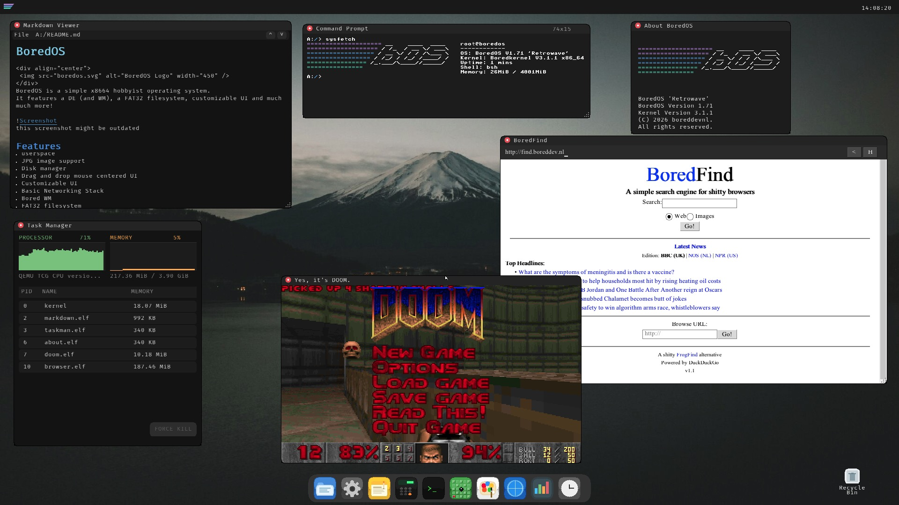

Note: this screenshot might be slightly outdated
Features
Bored WM and DE
MacOS UI Inspired Desktop Environment. Mouse-centered drag and drop UI with customizable settings.
Network Stack
A network stack utilizing lwIP featuring a simple HTML2.0-compatible browser.
FAT32 File System
Memory based FAT32 file system with support for FAT32 ATA drives.
CLI & Userspace
A shell to interact with the kernel. Includes a (Limited) C Compiler.
Image & Text Rendering
JPG image support, Markdown Viewer, and GUI Text Editor.
Applications
Paint application, Minesweeper, and more!
Hardware Support
64-bit long mode support. Multiboot2 compliant. Runs on actual x86_64 hardware.
Command-Line Interface (CLI)
How to Use
Upon boot, you will be greeted with the BoredOS desktop, at the top is a menu bar. Click the BoredOS logo to open system information and more, on the bottom is a Dock with applications to launch.
Handy Tools
HELP
A cmd command allowing you to see a short list of available commands.
Explorer
Allows the user to navigate the file system.
About
Displays Boredkernel and BoredOS version number.
Calculator
A simple calculator for basic arithmetic operations (add, subtract, multiply, divide) on integers.
Notepad
Allows you to jot down some notes!
Settings
Allows you to graphically change certain settings.
Documentation
Docs
BoredOS includes an extensive docs/ directory covering architecture, the build
system, and application development SDKs.
Help me brew some coffee! ☕️
If you enjoy this project, and like what i'm doing here, consider buying me a coffee!

License
Copyright (C) 2024-2026 boreddevnl
This program is free software: you can redistribute it and/or modify it under the terms of the GNU General Public License as published by the Free Software Foundation, either version 3 of the License, or (at your option) any later version.
NOTICE
This product includes software developed by Chris ("boreddevnl") as part of the Boredkernel/BoredOS project.
Copyright (C) 2024–2026 Chris / boreddevnl (previously boreddevhq)
All source files in this repository contain copyright and license headers that must be preserved in redistributions and derivative works.
If you distribute or modify this project (in whole or in part), you MUST:
- Retain all copyright and license headers at the top of each file.
- Include this NOTICE file along with any redistributions or derivative works.
- Provide clear attribution to the original author in documentation or credits where appropriate.
The above attribution requirements are informational and intended to ensure proper credit is given. They do not alter or supersede the terms of the GNU General Public License (GPL), which governs this work.